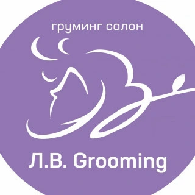
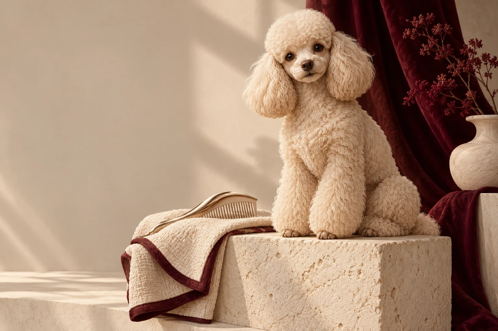

Стрижка мелких пород
Породная стрижка для небольших собак. Детали комплекса уточняются перед визитом.

L.V. GroomingГруминг · МоскваL.V. Grooming — салон для домашних питомцев на улице Плющева. Стрижка, уход за шерстью и удобная запись к своему мастеру.

Расскажите, какой ваш питомец дома, как он переносит фен и что особенно любит. Форма стрижки — только часть разговора. Не менее важны привычки и состояние шерсти.
Порода, вес и состояние шерсти помогают уточнить состав процедуры. Важные детали обсудим до визита.
Породная стрижка для небольших собак. Детали комплекса уточняются перед визитом.
Подбор формы с учётом шерсти и пожеланий владельца.
В профиле опубликована стрижка кота под машинку. Подходящую процедуру заранее обсудите с мастером.
Цены из профиля DIKIDI. Итог зависит от выбранной услуги и состояния шерсти.
Выберите тип шерсти. Покажем, какие вопросы стоит обсудить с грумером перед записью.
Поговорим о подходящем уходе.
В профиле записи L.V. Grooming представлены Елена и Анастасия. Выберите специалиста и посмотрите доступное время в DIKIDI — без переписки о свободных окошках.
Без сложной подготовки. Соберите несколько деталей, которые помогут мастеру лучше понять вашего питомца.
Сообщите породу, вес и задачу: стрижка, вычёс или регулярная гигиена. Фото питомца поможет мастеру уточнить подходящий состав.
От выбранного комплекса, размера питомца и состояния шерсти. Дополнительную работу, в том числе разбор колтунов, стоит согласовать до начала ухода.
Расскажите об этом заранее: какие звуки или действия тревожат, как проходил предыдущий визит. Подходящий формат и возможности студии обсудите до подтверждения времени.
В официальном профиле салона и на карте. Художественные животные на этом сайте — иллюстрации, а не фотографии выполненных стрижек.
Кнопка записи откроет контакт или действующий сервис салона. Свободное время и запись подтверждаются именно там.
Запись подтвердит салон в своём сервисе или при личном обращении.
ул. Плющева, 14
График, состав процедур и стоимость уточняйте при записи.